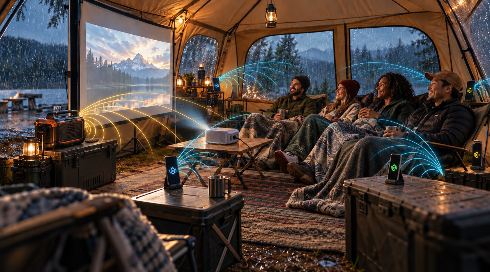
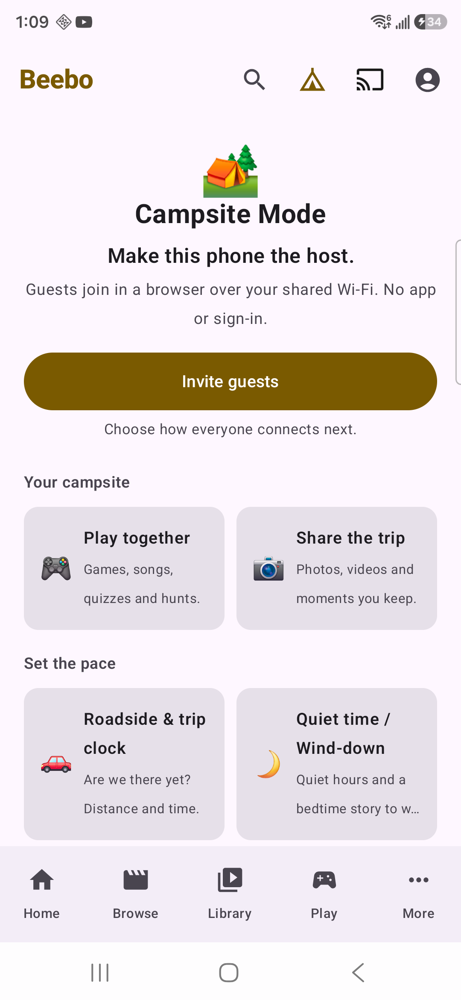

Campsite Mode: your phone as a theatre and game room
Invite nearby guests from your Android phone over local Wi-Fi. They join in a browser, without a separate app or sign-in. Download what you want to share before the trip. A host and guest connected on two real phones and one shared film played; guest games and bigger groups still need real-device tests.
Beta Status: Campsite Mode is in the Android test app. Real-device checks so far: on September 30, an S24 Ultra hosted and an S9+ joined over real home Wi-Fi, and the guest browser opened the local library. On October 4, an S24 Ultra host (a development build) shared one film to one guest phone in Chrome, and the guest joined it. On October 5, the Campsite host screen and a Crazy Eights round against Hopping Beebo worked on a Galaxy S9+, and the Campsite screen opened on a Galaxy S24 Ultra (Android 16), without starting a hotspot. A second film, more guests, guest games over Wi-Fi and the Wi-Fi join code scanned by a real phone are not tested yet. See what’s tested. Hotspot behaviour still varies by Android phone and network. This feature is for Android phones; it is hidden on TVs.

Before you go
- Download the videos you want while you still have Wi-Fi. The host phone or tablet shares the videos, photos, stories and games already downloaded to it. Once they are downloaded, nothing streams from your home PC unless you play a film that is not downloaded (see below).
- Guests need a phone, tablet or laptop with a web browser. They do not install anything or sign up.
- Guests must stay near your phone to keep their signal, just like staying near a home Wi-Fi.
Your computer can be off
The important part is the downloads on the host phone or tablet. Download what you want before the trip and wait until the downloads finish. Then your Beebo desktop computer can be turned off. In the woods, the host device serves the prepared items over a nearby local Wi-Fi connection. No cell data or internet is needed for the campsite session itself.
The host should keep the phone charged, awake and close to the group.
What guests see depends on the Show my whole library to guests switch on the host screen. When it is off, guests see only what you have downloaded. When it is on, guests see everything your profile can see, with posters, and can ask you to play a film. Anyone who joins the campsite can see that list. The list comes from your Beebo computer, and a film that is not downloaded plays from it, so the computer must be on and reachable for those. Until you change it, the switch is on for an admin profile with no parental limits, and off for other profiles.
Step by step
-
Open Campsite Mode
In the Android app, tap the tent icon at the top of the screen to open Campsite Mode. You can also open it from the Play tab (Campsite Mode) or from More (Campsite & Wi-Fi).
What you’ll see: The host screen says “Make this phone the host,” with an Invite guests button. Layout and wording may differ on another build.

Real Galaxy S24 Ultra app capture, October 1, 2026. This is the opening screen, before inviting a guest. -
Tap Invite guests
Tap Invite guests. This starts Campsite Mode so other phones can watch and play. Next, it asks you to pick the Wi-Fi. Nothing is switched on until you choose.
-
Step 1: get guests on the Wi-Fi
Pick how the other phones reach yours:
- Start BeeboTV Wi-Fi (on some phones the button says Start DIRECT-BeeboTV Wi-Fi). Beebo makes a Wi-Fi just for this.
- Use my phone’s own hotspot. A hotspot is your phone sharing its own Wi-Fi.
- Everyone’s already on the same Wi-Fi.
The first two options have no internet. That is fine: they are only there to connect the group to the host phone. Guests scan the first code to join the Wi-Fi, so nobody has to read out a password.
Android decides which hotspot options each phone can use. Beebo asks for a permission only when you choose Start BeeboTV Wi-Fi. On Android 13 and newer it asks for Nearby Wi-Fi devices. On older versions Android requires the Location permission for this instead, and Beebo explains why before asking. If the phone needs the owner to switch on its own hotspot, Beebo shows Open network settings instead of pretending it has turned it on. Android does not always open the hotspot page itself, so the card also says where to look in your phone’s Settings. This help is new in Android 1.51-tester11, and phone brands label their settings differently.
What you’ll see: A join code for guests, headed “Step 1 — get guests on the Wi-Fi”.
-
Step 2: open the theatre
Guests scan the second code, headed Step 2 — open the theatre, or open the address shown under it. Their browser opens the Beebo guest page on the host phone. No account or sign-in is needed.
Guest name: leave the name blank to join as Guest 1, Guest 2 and so on, or choose a nickname such as BeeboMan. That nickname appears in games, shared activities and the campsite-session scoreboard. This expanded guest-session flow is Planned until it is in a tested download.
What you’ll see: The bar at the top of the host screen shows how many guests are connected and how many downloaded videos are ready, for example “1 guest connected · 3 downloaded videos ready”. If a guest sees “not connected to a network”, they skipped step 1, or their phone is in Airplane mode with Wi-Fi off.
-
Watch, play and share
After guests join, try a prepared shared video or game on each phone. The two-phone tests so far proved the connection, the guest library and one shared film from host to guest (October 4, 2026), not guest game play over Wi-Fi or sync with more guests. Record what happens on both devices.
-
Stop when you are done
On the Hosting your campsite bar, tap Stop. When asked “Stop Campsite Mode?”, tap Stop again. If nobody is connected for 15 minutes, Campsite Mode stops by itself.
What guests can do
- Watch together (Campsite shared video). This is Campsite’s local shared video on your own Wi-Fi, separate from the online Watch Together rooms, which are Beta. Guests see live sessions on their library page and can tap straight in, already in sync. Whoever opened the video holds playback, and the page is designed to hand it on if they wander off. Play, pause and skipping around happen on the browser page. The shared-timeline sync and the handoff itself are built and reachable from the guest page, but have not yet been tried with real guests over a real Wi-Fi connection.
- Games and tournaments. Shared and solo games run on each person’s own phone in the browser. The group chooses the same game and the leader starts the round. A campsite-session tournament table, optional nickname and per-session guest stats are Planned; they will be shown as available only after real-device testing.
- Campfire stories. Story starters to read out loud and pass round, a story spinner (a character, a place, a problem and a twist), and “next line” mode where anyone can add a sentence. Read aloud uses the phone’s built-in voice, and night red dims the screen to a soft red.
- Shared photos and videos. Take turns presenting: swipe to change the photo for everyone, or play a video together.
- Synced group music. Beta Beebo Campsite Mode can play the same music in sync on many phones at once, and can split it into a left and right stereo pair across two phones. The host phone queues songs from your Beebo music library, and each guest’s phone plays them in step over the host’s Wi-Fi, with no internet needed by the guests. It is in the Android test download and has not been measured on real phones yet. Phones as surround speakers for movies, where a TV or PC shows the picture, are Beta in Beebo for Windows (simulated only). See Turn every phone into a speaker and the step-by-step guide.
- Also in the app: a star chart, a packing list and a scavenger hunt. The Trip Journal can turn a trip’s games and stories into a recap.
- Added in Android 1.40, still in the current test download. Beta A License Plate & Sign Hunt (a checklist game for passengers), a Trip Clock (an estimate, not navigation), Quiet Hours and a Bedtime Wind-Down, Roadside Quiz packs (336 original questions) and a Campfire Songbook engine. The Songbook has no song library: only two tiny placeholder chants are built in, and you import song packs you have checked you may use. There is also a Scavenger Hunt for Everyone that runs offline in guests’ browsers, with no app. All of these are in the current test build and have not been run on real phones yet. Family features for the separate Beebo Auto car app are Beta: they are in the Beebo Auto test download and have never been tried in a real car.
Safety and privacy notes
- It runs on a local Wi-Fi, not the internet. The guest server and its pages make no internet requests, and Beebo’s own Wi-Fi has no internet. That is why it works with no signal. It does not mean the whole app is offline: the rest of the app can still reach the internet if the phone is connected, and Scavenger Hunt reads your location while its screen is open and, when the phone is signed in and online, can share finds through Beebo’s online room service.
- The guest page is plain HTTP on that Wi-Fi. Treat it like a shared room: anyone who can join the Wi-Fi and has the address can open it. Beebo’s own Wi-Fi is protected by a password, which the join code holds so nobody has to type it.
- Guests cannot save your videos in the ordinary way. The player page removes the download control and the right-click menu, and nothing is written to a guest’s device. That stops normal saving. It is not a claim that a determined person with developer tools could never copy a stream, so only share what you are happy to share.
- Names are session-only. Guests use an optional nickname for the current campsite session. Beebo should make duplicate names distinct and clear these temporary guest records when the host ends the session.
- Share only videos you have the right to share. Beebo includes no movies or shows.
If something goes wrong
A guest’s page will not load after joining
Beebo’s own Wi-Fi has no internet. Some phones try to use mobile data instead when the Wi-Fi has none, so have the guest turn mobile data off for a minute and reload. Also check they scanned step 1 first.
The code will not open on a shared or hotel Wi-Fi
Some public and hotel Wi-Fi networks keep phones from seeing each other. Use Beebo’s own Wi-Fi or your phone’s hotspot instead.
Nobody can see any videos
Unless Show my whole library to guests is on, the host phone shares only videos already downloaded in the Beebo app. Check the “downloaded videos ready” count on the host screen. Download the videos while you still have Wi-Fi.
Guests lose the connection
They have gone out of range of the host phone. Move closer, and keep the host phone charged and awake while a session is running.
Related pages
Checked against Beebo for Windows 0.1.79 and the Android test build 1.51-tester12 (build 62) on October 5, 2026. Found something that doesn’t match what you see? Tell us at testers@beeboentertainment.com. It is a plain email, with no form and no sign-up.